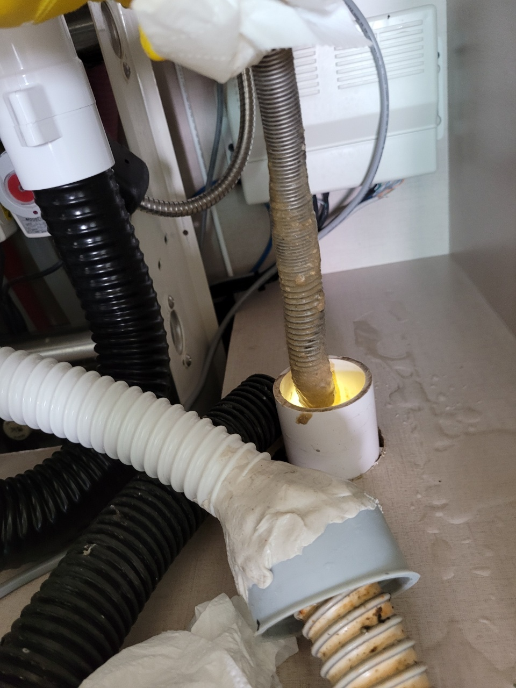
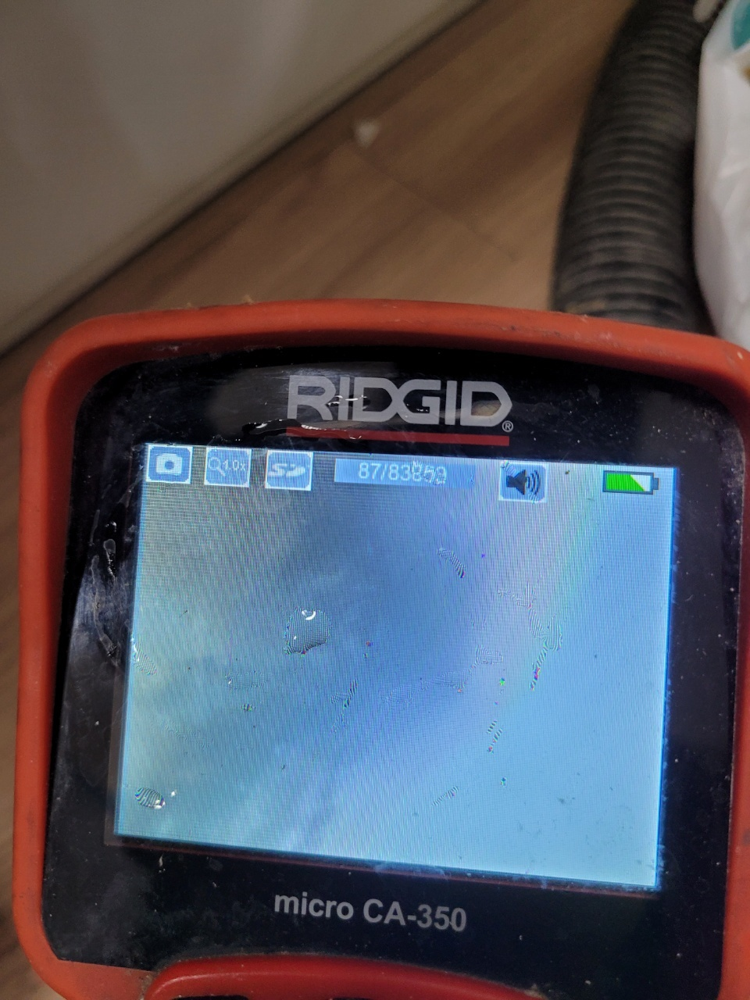

🏠 처인구 남사읍 이동읍 하수구막힘뚫음 전문업체 필요하실 때 빠르게 출동!
용인 처인구 하수구막힘 전문 시공 후기

📋 작업 개요
- 위치: 용인 처인구, 처인구, 용인
- 서비스 유형: 하수구막힘, 배관막힘, 맨홀막힘, 역류해결, 뚫는업체
- 작업 일시: 2023. 2. 22. 21:25
- 업체명: 하수구수사대 (010-5615-2118)
🔍 문제 상황
안녕하세요 하수구수사대입니다.
오늘 소개해 드릴 현장의 사례는 처인구 남사읍 이동읍 하수구막힘뚫음 전문업체를 통해서 해결을 한 곳인데요 한 동네에서 여러 세대가 동시에 배관 막힘으로 인한 하수구 문제 때문에 상당한 불편함을 겪고 있다고 해서 빠르게 현장으로 달려가서 해결을 해드린 곳이었습니다.
지금 같은 겨울철에는 이러한 배관막힘이 발생하게 되면

🔎 원인 분석
💡 전문가 진단: 지금 같은 겨울철에는 이러한 배관막힘이 발생하게 되면
동파가 될 우려가 있기 때문에 시간을 지체하지 말고 빠르게 해결을 하시는 것이 필요합니다. 처인구 남사읍 이동읍 하수구막힘뚫음 전문업체 현장의 해결 사례를 통해서 배관 막힘이 발생을 하게 되면 어떻게 해야 하는지에 대해서 알아보도록 하겠습니다.
처인구 남사읍 이동읍 하수구막힘뚫음 전문업체 의뢰를 받은 현장에 도착을 했을 때 여러 세대의 배관 막힘으로 인해서 많은 분들이 악취와 상당한 불편함을 겪고 있는 상황이었습니다. 현장의 경우는 도심과도 어느 정도 떨어져 있는 곳이었는데요 이곳에서는 몇 주 동안 여러 세대를 통해서 하수구를 이용해서 물을 내려보 내았지만 좀처럼 내려가지를 않고 오히려 역류가 발생하는 상황이 발생을 하고 있었습니다.
그래서 특히나 더 힘든 나날을 보내고 계셨는데요 특히나 여름철에 이렇게 배관이 막히게 되면 샤워를 자주 하기 때문에에 물을 사용하는 빈도도 높은 때인 만큼 고객님들이 더욱 많은 불편함을 느끼실 수 있을 것 같습니다. 또한 지금 같은 겨울철에는 배관이 막혀서 물이 흐르지 않게 되면 동파로 이어지는 경우가 있을 수 있기 때문에 빠르게 해결을 하는 것이 필요하다고 할 수 있습니다.
현장의 주변에는 가정집뿐만 아니라 공장과 사무실 등의 다양한 용도의 공동으로 사용되는 건물들도 자리를 잡고 있었습니다. 실제로 주변에 있는 일부의 사무실과 공장에서는 업무를 정상적으로 하기 어려운 상황이었기 때문에 빠르게 해결을 하기 위해서 노력하였습니다.

🔧 작업 과정
저희 하수구 수사대에서는 현장 의뢰 시
가장 먼저 일정을 확인해서 고객님께서 작업을 받아보실 수 있는 시간에 맞춰서 방문을 해드리고 있습니다. 요즘에는 시중에 나와있는 기구들이 많다 보니 하수구 막힘이 발생했을 때 당황을 하거나 직접 해결을 하려고 여러 방법을 시도해 보시는 경우가 많이 있습니다.
하지만 실제로 시도를 해보신 분들은 경험해 보셨겠지만 마음만큼 쉽게 해결이 되지 않는 경우가 많이 있습니다. 그래서 보다 확실하게 배관의 막힘을 뚫기 위해서는 결국에는 전문가의 도움이 필요할 수밖에 없는 것입니다. 또한 배수구가 이렇게 막히게 되는 현상 같은 경우는 배관의 상태가 노후되거나 나쁜 경우에도 자주 발생을 할 수 있게 되는데요 그러므로 평소에 얼마나 쾌적하게 배관 관리를 할 수 있느냐가 중요하다고 할 수 있습니다.
그러므로 혹시라도 하수구의 막힘으로 인해서 물이 잘 내려가지 않게 될 때에는 배수관의 상태를 먼저 점검을 하는 것이 필요하고 이물질의 양이 많을 때에는 전문 장비를 이용해서 어떻게 뚫어야 하는지에 대해서 전문가와 상의를 해서 해결을 하는 것이 좋습니다.
이번 처인구 남사읍 이동읍 하수구막힘뚫음 전문업체의 현장의 경우에는
외부나 집안으로 노출이 되어있는 배관의 문제는 아니라는 것을 알 수 있었습니다. 또한 주변에 있는 많은 세대에서도 동일한 현상을 겪고 있었는데요 한 세대가 아닌 여러 세대에서 발생을 하고 있다 보니 공동배관의 점검이 필요한 상황이었습니다.


✅ 작업 완료
맨홀 아래로 내려가서 공용 배관의 이물질을 제거하는 작업을 하였고
이물질들을 제거를 함으로써 근본적인 막힘의 원인을 해결을 하였습니다.




⚠️ 하수구 배관 막힘 예방 및 관리 가이드
- ✅ 머리카락, 비닐, 물티슈 등 물에 분해되지 않는 이물질은 하수구 유입을 절대 금지해 주세요.
- ✅ 하수구 거름망을 씌우고 모여진 이물질은 주기적으로 쓰레기통에 바로 비워주셔야 합니다.
- ✅ 배관 노후가 심할 경우 이물질이 더 쉽게 걸리므로 주기적인 배관 세척(고압세척 등)을 권장합니다.
- ✅ 작업 후 1년 이내 재발 시 하수구수사대에서 무상 A/S 보증 서비스를 제공합니다.
💡 핵심 정리
- 확실한 장비 작업(내시경 점검 및 샤프트 스케일링)으로 원인을 뿌리 뽑습니다.
- 작업 후 1년 이내에 동일한 부위 재발 시 100% 무상 A/S 서비스를 보장합니다.
- 서울 · 경기 · 인천 전 지역에 24시간 언제든 긴급 출동할 수 있도록 항시 대기 중입니다.
❓ 자주 묻는 질문 (FAQ)
🚨 용인 처인구 하수구막힘 문제로 고민이신가요?
정확한 원인 진단과 확실한 시공으로 재발 없는 해결을 약속드립니다.
24시간 긴급 출동 | 서울 · 경기 · 인천 전지역 | 1년 내 재발 시 무상 A/S